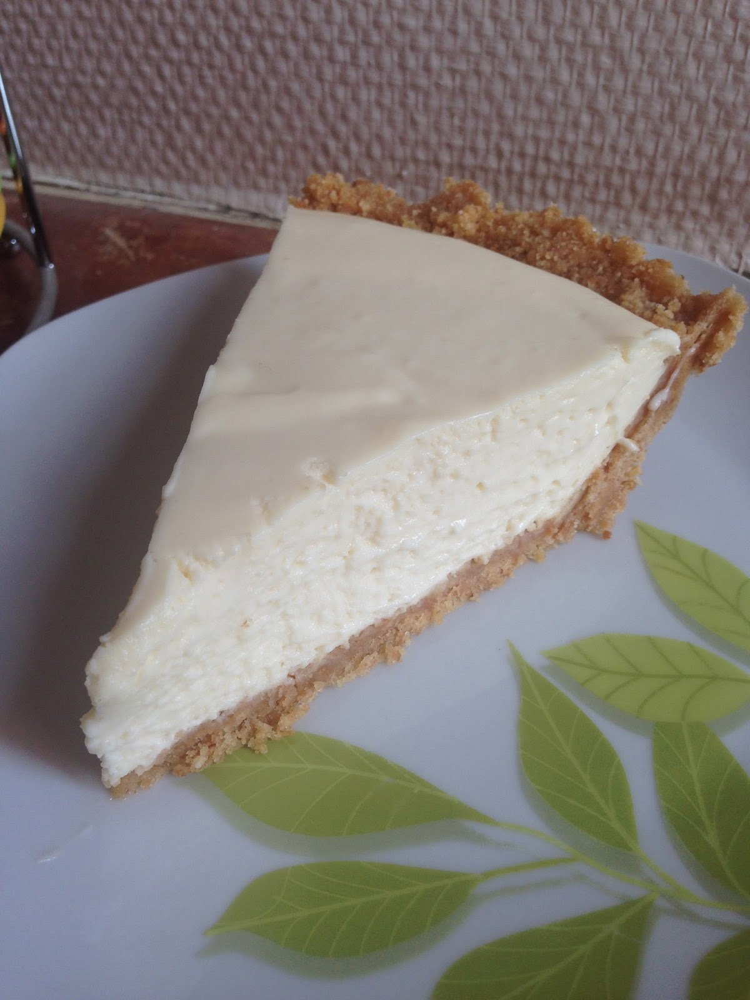

Chili

Description
A quick lemon cheesecake
Ingidients
- 1 (3 ounce) package lemon-flavored gelatin
- 1 cup hot water
- ¼ pound butter
- 8 tablespoons white sugar
- 2 (14.4 ounce) packages graham crackers,
crushed into fine crumbs
- 2 lemons, zested
- 2 (8 ounce) packages cream cheese, softened
Steps
- Pour gelatin mix into a bowl and add 1 cup
hot water. Stir until dissolved. Set aside
and do not chill.
- Melt butter in a heat-resistant measuring cup
in a microwave, about 30 seconds. Transfer
melted butter to a bowl. Add sugar and mix
well. Pour in graham cracker crumbs and
mix well. Place crumb mixture into the
bottom of an 8-inch pie pan and shape
into a crust.
- Stir lemon zest into warm gelatin mixture.
Add cream cheese and mix until any lumps are
gone. Pour filling into the prepared crust.
Chill in the refrigerator for at least 2 hours.